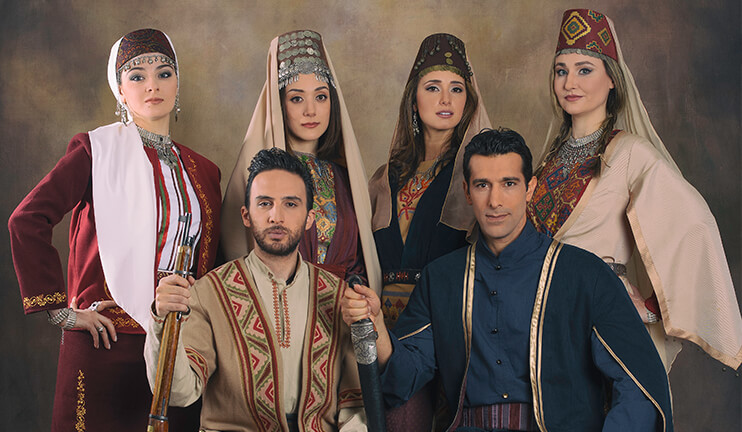

Armenia
About The Country
Armenia
officially the Republic of Armenia, is a landlocked country in the Armenian Highlands of Western Asia.
It is a part of the Caucasus region; and is bordered by Turkey to the west, Georgia to the north, the Lachin corridor (under a Russian peacekeeping force)
and Azerbaijan to the east, and Iran and the Azerbaijani exclave of Nakhchivan to the south. Yerevan is the capital, largest city and the financial center.
Armenia is a unitary, multi-party, democratic nation-state with an ancient cultural heritage. The first Armenian state of Urartu was established in 860 BC, and by the 6th century BC it was replaced by the Satrapy of Armenia.
The Kingdom of Armenia reached its height under Tigranes the Great in the 1st century BC and in the year 301 became the first state in the world to adopt Christianity as its official religion.
culture

Over the centuries, Armenians interacted with many cultures and created a sophisticated society.
But the country’s strategic location made it vulnerable to emigration and conquest. Invasions
between AD 1000 and 1500 led many Armenians to flee to Cilicia (in southcentral Turkey), Constantinople, Smyrna, Poland, and the Crimea.
In the late 1800s and early 1900s, persecution under the rule of the Ottoman Empire pushed more Armenians into exile.
Today, more than twice as many Armenians live outside the country as inside it.
About 7 million people of Armenian descent live in Russia, the United States, France, Ukraine, Georgia, Lebanon, and elsewhere.
If you have Armenian ancestors, knowing more about Armenian culture can help you feel connected to them.
Food